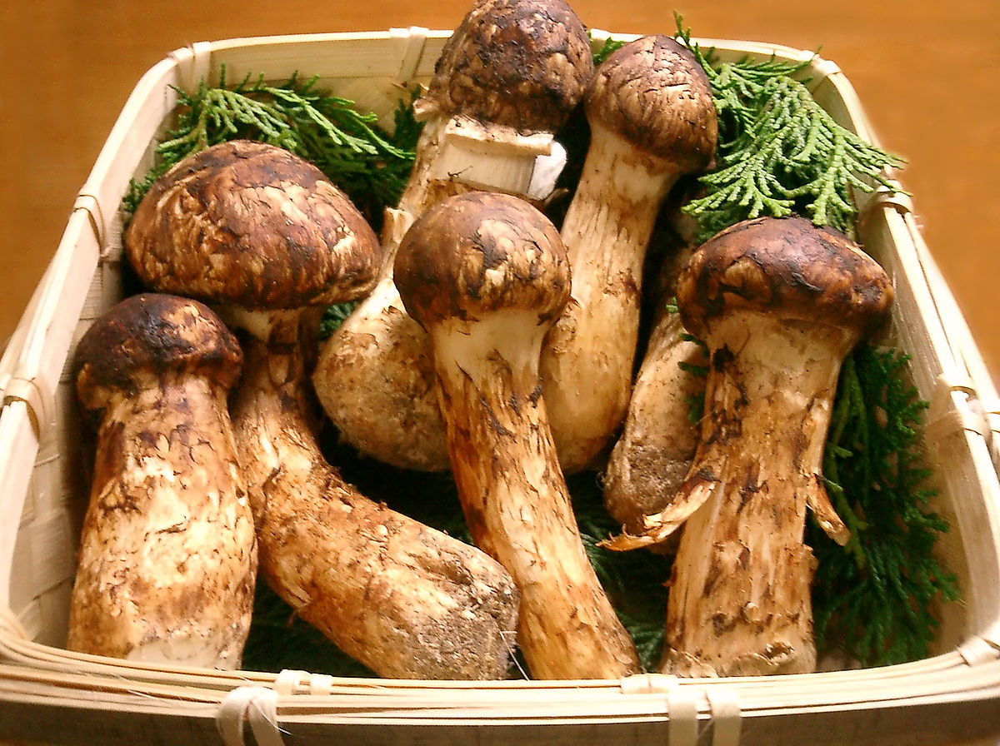

-
1) Kobe Beef
Kobe beef is one of Japan's most delicious and classy dishes. The Japanese have developed a special care process for Kobe cows to achieve quality meat. Since their first days of birth, Kobe cows have been given beer. They are allowed to relax with classical music so that they can feel completely comfortable. It is believed that the if a cow feels "happy", the taste of its meat will be better. Thus, the price of Kobe beef is up to $ 1000 per kilogram.
Approximate Price: 1000 USD / 1 kg -
2) Puffer Fish Salad

It seems that only Japan has a "deadly dangerous" dish like this Puffer Fish Salad. If there is any negligence during processing, the fish poison will cause serious harm. As a result, chefs preparing puff pastry must undergo strict training and must have a certificate of practice. Regarding the salad, it must maintain the taste of pangolins and itch without harming the health of the eaters due to the retention of some toxic fish.
Approximate Price: 100 USD / piece -
3) Otoro

The ocean tuna is often the best ingredient to make the famous Japanese sushi. The standard Toro must come from the ocean blue tuna, the most valuable being the Otoro. In 2003, Kiyoshi Kimura, the owner of Sushi-Zanmai Japan, invested $ 1.76 million to auction the ocean tuna weighing in at 221 pounds. At Tokyo's premium bars, each slice of Otoro tuna is priced at $ 24.7.
-
4) Matsutake mushroom

Growing only in autumn in the pine forests of Japan, Matsutake mushrooms are extremely valuable mushrooms, which are about $ 2,000 per kilogram. Surprisingly, where a mushroom is picked is not going to allow any other Matsutake mushroom to grow. Price: 2000 USD / kg
-
5) Yellow Melon Yubari

Yellow Melon Yubari is a special type of melon grown on Hokkaido volcanic soil with smooth, sweet and fragrant scent that no other land has. Yubari is often used as a luxury gift to give VIP customers. The price of Yubari yellow melon in Hokkaido was auctioned in 2008 for $ 28,000. Price: 500-2800 USD / kg
-
6) Ruby Romance Grape
Originated from the Ishikawa region of Japan, a Ruby Romance grape bunch can be valued as $5,400. This grape is meticulous cared on the field. Each bunch of grapes has about 30 small berries and each grape weighs about 18g. If it is a high-grade Ruby Romance, the grape must weigh up to 30g. This is the most expensive grape from Japan.